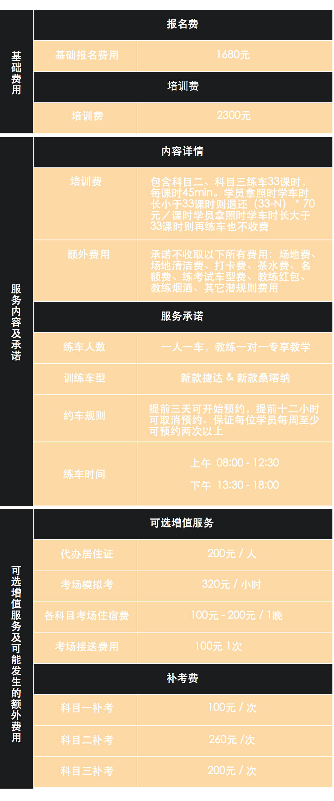

Q:你们是驾校吗？
A:我们不是驾校，我们是集合全成都5%优秀教练的互联网学车平台，直接连接学员与教练。
Q:你们和传统驾校有什么不同？
A:传统驾培:1.不知道除了报名费还要缴纳其他费用不,不确定教练是否收取红包;2.练车时间不确定,一般听教练安排,且练车时可能很多人排队; 益驾学车:1.除了报名费不会产生其他费用;2.一人一车练车，练车时间保障，学员随时预约，教练不能修改预约时间
Q:你们教学模式是一对一吗？
A:我们平台所有教学模式都为1对1教学,这样可以替提升教学效率与质量.
Q:你们那里能学什么驾照？
A:目前我们只针对C1驾照的考取开展服务,后续可能会开通更多驾照类型的考取服务.
Q:2980元包含哪些费用？

Q:我能在20个课时内学完吗？
A:根据我们的调研分析,通常在20~30个课时可以取得驾照,最快在20个课时取得.
Q:我报名后在哪儿学车？
A:我们会为您匹配最符合你地理位置的优秀教练,集中在西边:犀浦,IT大道,日月大道,南边:环球中心,华阳,中和等,其他练车地点正在扩展中.
Q:报名后最快多久可以拿到驾照？
A：要根据学员的学车时间而定,如果学员时间充足且都是一次性通过,就会很快拿到驾照,从第一次练车开始最快30天可拿到驾照。
Q: 益驾学车有哪些报名方式？
A：目前用户可以通过线上线下两种方式报名，线上报名：用户可以直接通过益驾学车的微博“益驾学车”以及官方微信公众号“益驾学车”完成注册及报名；线下报名：用户可自行到益驾学车公司现场报名或益驾学车组织的活动现场报名。